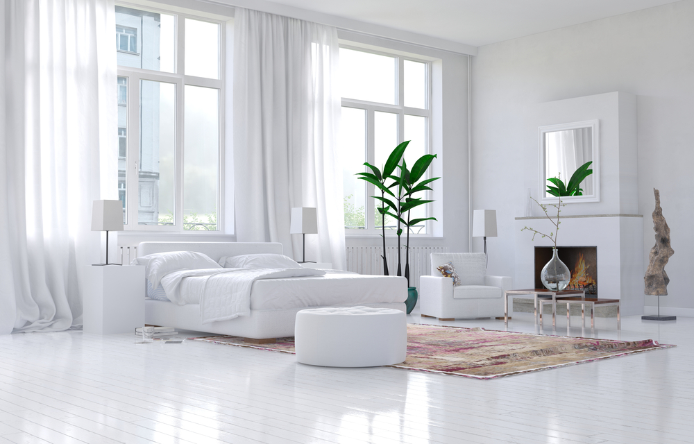
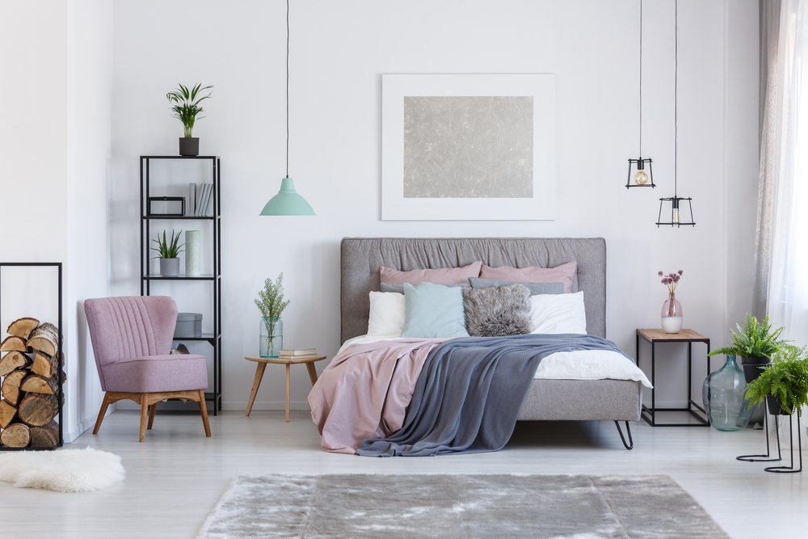

1-Master bedroom decorating tips:

It is preferable that the bedrooms be combined in a suite, so it is not preferable to combine them with the living room, or to make their entrance from the hall.
It is desirable that the entrance to the bedrooms be away from the main entrance.
The bathroom should be close to the sleeping suite.
The path between the bathroom and the bedroom should not intersect with another path.
2-Children's bedrooms:
It is preferable to keep children's bedrooms away from the living room, and paint their walls with washable paint.
Windows should be low, with protection secured from the outside.
It is preferable that the dimensions of the furnishings match the sizes of the children.
It is necessary to have natural lighting in it.
3-Each piece of furniture in the bedrooms has different sizes:
Double bed sizes: 2 * 1.8 m or 2 * 1.9 m or 2 * 2 m. The appropriate size must be chosen for the space of the room, as well as the height of the individual.
The depth of the wardrobe is 60 centimeters, and the length varies depending on the length of the wall that will contain it.
With regard to colors, it is preferable to use cold colors in most parts, and hot colors in very few parts. The bright, vibrant colors match the fabrics of curtains,
bed covers and pillows, which spreads a lively touch in the decor.
4-Simplicity in distribution and reducing room elements:

Attention to providing the largest amount of space that does not have furniture, because the sense of space is what makes a person comfortable and happy.
When designing any room, we must take into account the space and strike a balance between the space with furniture and the open space, and the space with fixed furniture and moving furniture,
all of this has an impact on the person inside the room.